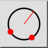

2 Body a poloměr
Panel nástrojů / Ikona:


Nabídka: Kreslení > Kružnice > 2 Body a poloměr
Zkratka: C, D
Příkazy: circleradius | cd
Jedná se o automatický překlad.
Panel nástrojů / Ikona:


Kreslí kružnici ze dvou bodů na čáře kružnice a poloměru.